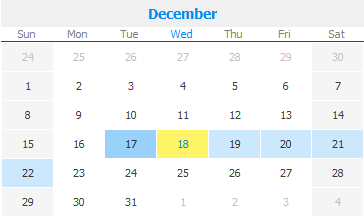

Summary
In year view, you can view each month of your year as a heatmap marking how busy each day is.
Navigating Through the Year Calendar View
The year view has Forward, Back and Today buttons located at the top left corner of the calendar.

By clicking the left and right arrows (Back and Forward), the displayed year can be changed. The Today button jumps to the
current month.
In the year view, days with commitments or events scheduled are colored blue, with a darker blue signifying a higher density of events.

To jump to a specific day from the year view, double click on that date and it will open the day in the day view tab.
The current day of the year is highlighted with yellow.